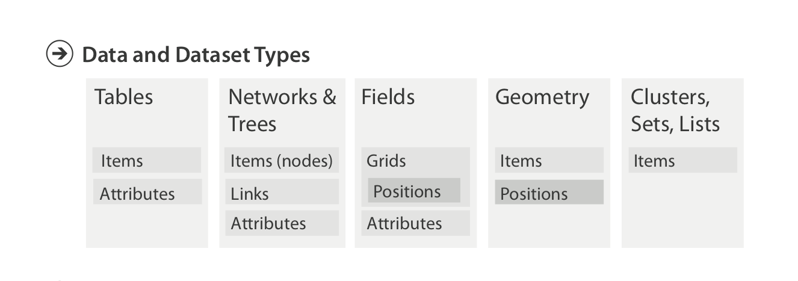
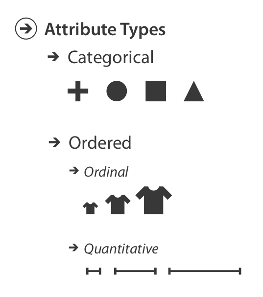
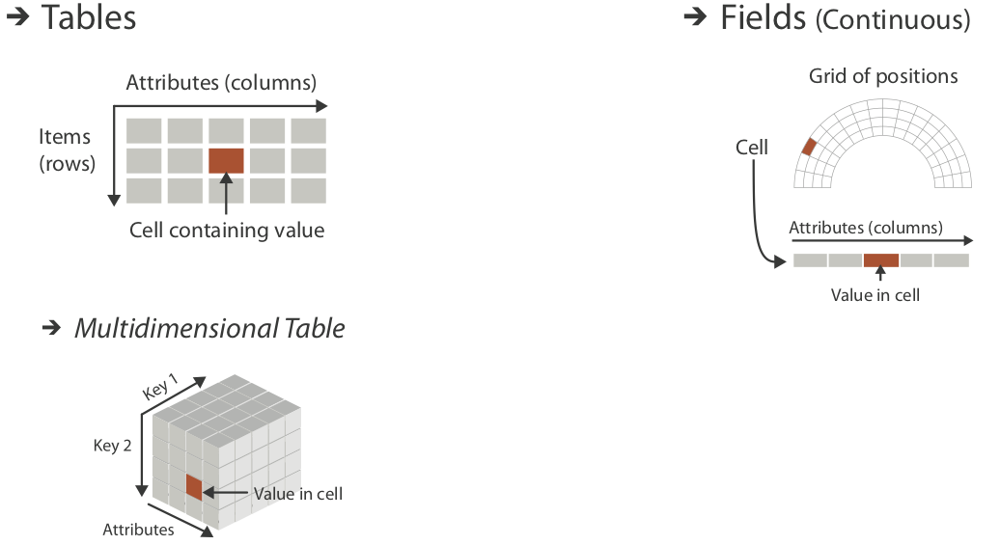

Ken Wakita
2019-12-04
Tables / Networks / Fields / Geometry +
and three more: Clusters / Sets / Lists
Items / Attributes / Links / Positions / Grids
Static file / Stream
Categorical / Ordered (Ordinal / Quantitative)
Ordering Direction: Sequantial / Diverging / Cyclic
これは何？
14, 2.6, 30, 30, 15, 100001では、こちらは？
Basil, 7, S, Pear今月7日にバジルと桃の積荷が届いた (shipping)
近隣のBasil Point 区に7インチの積雪があったので、Pear Creek有限会社に除雪してもらった
Basilという名前の実験用ネズミが迷路の南側に桃を置いた設定で7回脱出に成功した
Real world meaning
Structural and mathematical interpretation
家に3個のインスタントラーメンがありました。
母がスーパーでさらに5個買い足しました。
家には3 + 5 = 8個のインスタントラーメンがあります。
私と友人のスーパージャンボ宝くじの番号はそれぞれ215番と562番でした。
宝くじの当選番号は777番です。
215+562=777に気づいたぼくらは狂喜乱舞しました。ぼくらは大金持ちです。
個々の存在: 表のデータ項目、ネットワーク構造の頂点
測定、観測、記録可能な性質
Item – Item 間の関係（集合論的関係: \(a \,R\, b\)）
2D/3D空間において場所を与える空間的データ
連続的データ分布からのサンプリング戦略

\(\text {Items} \times \text {Attributes} \rightarrow \text {Value}\)
\((\text {Items}, \text {Items} \times \text {Items})\)
Node attributes: \(\text {Items} \rightarrow \text {Value(s)}\)
Link attributes: \(\text {Items} \times \text {Items} \rightarrow \text {Value(s)}\)
連続場から（有限のデータで表現するために）サンプリングしたもの
Scalar fields (X線画像: 2D、fMRI: 3D), Vector fields (風向+風力), Tensor-fields (地殻のひずみ)
\(\text {sampling} \longleftrightarrow \text {interpolation}\)
Spatial Fields: 空間的位置についてサンプリングしたもの
Grid types サンプリングの種別:
Uniform Grid (正方格子) / Rectilinear Grid (直方格子) / Structured Grid (曲線的な形状、例：極座標系における扇形状のサンプリング） / Unstructured Grid: Voronoi分割、行政区画に基づくサンプリング

Categorical: \(\equiv\), \(\not\equiv\)
Ordered (\(\prec\)): \(\subset, \sqsubset\)
Ordinal: 例：シャツのサイズ (S / M / L / XL)、順位
Quantitative (\(+\)): 首周りの長さ、走行距離、高さ、価格、プログラムのなかの関数の呼び出し回数、カフェでのコーヒーの注文回数
Sequential: 一方向的な比較
Diverging: 基準点からの大小比較の概念がある。例: 標高と水面下M
24時間
1週間
四半期
季節
年、公転周期、周期
Flat tables: \(\text {key} \rightarrow \text {value}\) – Key の一意性
Keyは ordinal でも categorical でもよい: Bar charts versus Line charts
Multidimensional tables (independent keys and dependent values)

言葉遣いが tables と異なる: Independent variables and Dependent values
Tables versus Fields
Fields は連続場からサンプリングしている。このため特定のセルの値だけでなく、隣接したセルの値の変化に意味がある。Tables の場合は必ずしもそうではない。
Multivariate Field: Dependent values が複数あること
Multidimensional Field: Independent variables が複数あること
{kind=link}